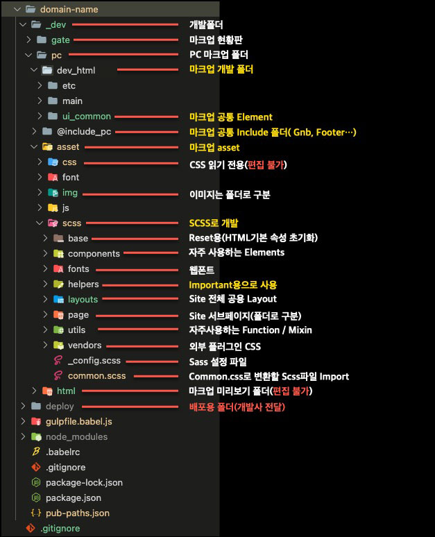

폴더 정보
- 
Precss소개
https://precss.io/ 규칙을 기반으로 작성네이밍 규칙
- Skip 내비게이션을 제외한 나머지 Element는 Class로 작성한다.
- 약어 사용가능
- OOCSS, BEM, PRECSS 조합 및 변형
- Class 중첩은 최대 3개를 넘지 않는다.
- 클래스 명은 camelCase로만 작성한다.(첫 단어는 소문자 그 다음 단어의 첫 문자는 대문자로 시작)
주석 규칙
-
HTML 주석 규칙
내용
-
수정 날짜 주석 규칙
2022-11-29 형식으로 작성
-
CSS 주석 규칙
-
JS 주석 규칙
HTML 파일명 규칙
-
HTML 파일명 규칙
MY010000.html MY020000.html MY : 페이지 네이밍 약어(MYPAGE) 00 : 첫번째 두자리 1Depths 순서 00 : 두번째 두자리 2Depths 순서 00 : 세번째 두자리 3Depths 순서 MY010000.html : 1Depths MY020000.html : 1Depths MY020100.html : 1Depths > 2Depths(1) MY020101.html : 1Depths > 2Depths(1)> 3Depths(1) MY020102.html : 1Depths > 2Depths(1)> 3Depths(2) MY020103.html : 1Depths > 2Depths(1)> 3Depths(3) MY020200.html : 1Depths > 2Depths(2) MY020300.html : 1Depths > 2Depths(3) MY020301.html : 1Depths > 2Depths(3)> 3Depths(1) MY020400.html : 1Depths > 2Depths(4) MY040100.html : 1Depths MY050000.html : 1Depths MY060000.html : 1Depths
클래스 네이밍 언더스코어 규칙(UnderScore)
- '--' : 더블하이픈(자기 자신의 클래스로 부터 수정된 클래스)
- '__' : 더블언더스코어(부모의 자식 요소)
- 부모와 자식 관계에서 최상위 부모 클래스명을 따라 그 자식에 맞게 클래스 사용
-
-
접두사 예약어 레이아웃 구성단위 : wrap > ly_ > { md} > bl_ > el_
- ly_ : Layout Module (페이지 레이아웃 구성)
- md_ : Modal Module (레이어 팝업)
- uq_ : Unique Module (특정 페이지) 예 : Error 페이지 uq_error
- bl_ : Block Module
- el_ : Element Module (Block에 속한 element 최소 단위)
- hp_ : Help Module (도우미 !important 사용)
- js_ : 스크립트 예약어( css 에서 스타일링 하지 않음) 최소 부모 Element에 js_ 접두사 사용
-
접미사 범용 Class로 클래스 제일 뒤에 네이밍으로 붙임 (프로젝트 예약어 )
공통을 사용하는 부모로 부터 접근해서 공통을 수정
- _series : 약어로 사용 < _sr >
- _xxsmall : 약어로 사용 < _xxs >
- _xsmall : 약어로 사용 < _xs >
- _small : 약어로 사용 < _sm >
- _medium : 약어로 사용 < _me:default >
- _large : 약어로 사용 < _la >
- _xlarge : 약어로 사용 < _xla >
- _xxlarge : 약어로 사용 < _xxla >
- _xxxlarge : 약어로 사용 < _xxxla >
-
예약어 Class (프로젝트 시작시 필수 등록)
- __inner : 자식 Element
- __header : 자식 Element
- __body : 자식 Element
- __footer : 자식 Element
- .el_icon
- .el_btn : {button의 약어}
- .el_rq : {required의 약어}
- .el_bul : {bulet의 약어} : 점, 선, 특수 문자
- .bl_tab : 탭이 여러 종류일 경우 Series로 구성
- .bl_tb : {table의 약어} : 테이블 스타일이 여러 종류일 경우 Series로 구성
-
탭 스타일 기본탭 스타일 2테이블 스타일 기본테이블 스타일 2
상태를 표시하는 Class (프로젝트 시작시 필수 등록)
- is_active (활성화 / 비활성화)
-
Class 조합 예시(el_btn + el_icon)
- el_btn + el_icon
-
.el_btn { // 버튼 초기화 } .el_btn_me { width: 120px; height: 44px; border: 1px solid green; border-radius: 8px; background-color: #91b991; } .el_icon { &::before, &::after { content: ''; display: block; width: 24px; height: 24px; } } .el_icon--leftClose { &::before { background: url('../../../pc/asset/img/common/btn_cancel.svg') no-repeat 0 0; } } .el_icon--rightClose { &::after { background: url('../../../pc/asset/img/common/btn_cancel.svg') no-repeat 0 0; } }
Z-index 관리 (프로젝트 시작시 필수 등록) : Z-index는 최소 단위 0부터 50단위씩 증가
- ly_header = Z-index 500
- md_login = Z-index 100
- bl_fillter = Z-index 150
Series 넘버링 (아래 리스트는 예시 Class) 첫번째 시리즈는 1번 숫자를 빼고 시작 : Series는 스타일이 비슷한 경우 사용 그외 새로운 유형으로 제작
- el_icon el_icon--star_sr
- el_icon el_iocn--star_sr2
- el_icon el_icon--star_sr3
- el_icon el_icon--star_sr4
-
마크업 리스트 수정 작성(최신 날짜가 우선)
- <td class="bl_history> 자식으로 등록
-
- 2022-11-30
- 수정 내용 입력수정 내용 입력수정 내용 입력수정 내용 입력수정 내용 입력수정 내용 입력수정 내용 입력
Gulp {include, for문 } 사용 방법
-
@@include('../../@include_pc/footer.html') @@for(var i=0; i<3; i++){ html소스 } 변수 사용 : `+i+` 변수 사용 예시 : `+i+`